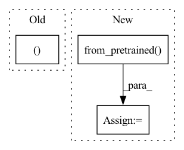

Pattern ID :31455
Before Change
def get_model(name):
assert name in T5_CONFIGS
_, model_klass = get_klass(name)
model = model_klass.from_pretrained(name)
return model
After Change
return tokenizer
def get_model(name):
model = T5EncoderModel.from_pretrained( name)
return model
def get_model_and_tokenizer(name):
global T5_CONFIGSIn pattern: SUPERPATTERN
Frequency: 4
Non-data size: 3
Instances Fragment ID: 92102712
Project Name: lucidrains/imagen-pytorch
Commit Name: 6d857854c25312dad6d379bb19d5b7e9fe0ccf68
Time: 2022-05-26
Author: jorgemcgomes@gmail.com
File Name: imagen_pytorch/t5.py
M Class Name: AnonimousClass
N Class Name: AnonimousClass
M Method Name: get_model(1)
N Method Name: get_model(1)
M Parent Class:
N Parent Class:
M File Name: imagen_pytorch/t5.py
N File Name: imagen_pytorch/t5.py
M Start Line: 61
M End Line: 63
N Start Line: 22
N End Line: 22
Before Change
super().__init__(model_type, model_path, space_token_id, max_seq_len)
// Loads model from input checkpoint
model, _, _ = load_model_from_checkpoint(model_type, model_path)
// Puts model on proper device and on evaluation mode
self.device = next(model.parameters()).device if device is None else deviceAfter Change
super().__init__(pre_trained_model_path, space_token_id, max_seq_length=max_seq_length)
self.model = ArchaiModel.from_pretrained( pre_trained_model_path)
self.device = next(self.model.parameters()).device if device is None else device
self.model = self.model.to(self.device)
self.model.eval()
Fragment ID: 92102709
Project Name: microsoft/archai
Commit Name: 0ef593e5c2db99650725caa6d7710b3481672d4a
Time: 2022-12-16
Author: gth.rosa@uol.com.br
File Name: archai/nlp/eval_utils/text_predict/text_predict_model.py
M Class Name: TextPredictTorchModel
N Class Name: TextPredictTorchModel
M Method Name: __init__(5)
N Method Name: __init__(6)
M Parent Class: TextPredictModel
N Parent Class: TextPredictModel
M File Name: archai/nlp/eval_utils/text_predict/text_predict_model.py
N File Name: archai/nlp/eval_utils/text_predict/text_predict_model.py
M Start Line: 113
M End Line: 124
N Start Line: 139
N End Line: 157
Before Change
devices = init_devices(args)
save_dict = torch.load(args.best_checkpoint, map_location=devices[0])
numericalizer, context_embeddings, question_embeddings, decoder_embeddings = \
load_embeddings(args.embeddings, args.context_embeddings, args.question_embeddings,
args.decoder_embeddings, args.max_generative_vocab)
numericalizer.load(args.path)After Change
device = devices[0] // server only runs on a single device
Model = getattr(models, args.model)
model, _ = Model.from_pretrained( args.path,
model_checkpoint_file=args.checkpoint_name,
args=args,
device=device
)
model.to(device)
model.eval() Fragment ID: 92102711
Project Name: stanford-oval/genienlp
Commit Name: af978f49e201bdf942e18839ec49f168273f38f9
Time: 2020-11-07
Author: s.j.semnani@gmail.com
File Name: genienlp/server.py
M Class Name: AnonimousClass
N Class Name: AnonimousClass
M Method Name: main(1)
N Method Name: main(1)
M Parent Class:
N Parent Class:
M File Name: genienlp/server.py
N File Name: genienlp/server.py
M Start Line: 168
M End Line: 185
N Start Line: 163
N End Line: 177
Before Change
def get_tokenizer(name):
assert name in T5_CONFIGS
tokenizer_klass, _ = get_klass(name)
tokenizer = tokenizer_klass.from_pretrained(name)
return tokenizer
After Change
// singleton globals
def get_tokenizer(name):
tokenizer = T5Tokenizer.from_pretrained( name)
return tokenizer
def get_model(name):
model = T5EncoderModel.from_pretrained(name) Fragment ID: 92102710
Project Name: lucidrains/imagen-pytorch
Commit Name: 6d857854c25312dad6d379bb19d5b7e9fe0ccf68
Time: 2022-05-26
Author: jorgemcgomes@gmail.com
File Name: imagen_pytorch/t5.py
M Class Name: AnonimousClass
N Class Name: AnonimousClass
M Method Name: get_tokenizer(1)
N Method Name: get_tokenizer(1)
M Parent Class:
N Parent Class:
M File Name: imagen_pytorch/t5.py
N File Name: imagen_pytorch/t5.py
M Start Line: 55
M End Line: 57
N Start Line: 18
N End Line: 18